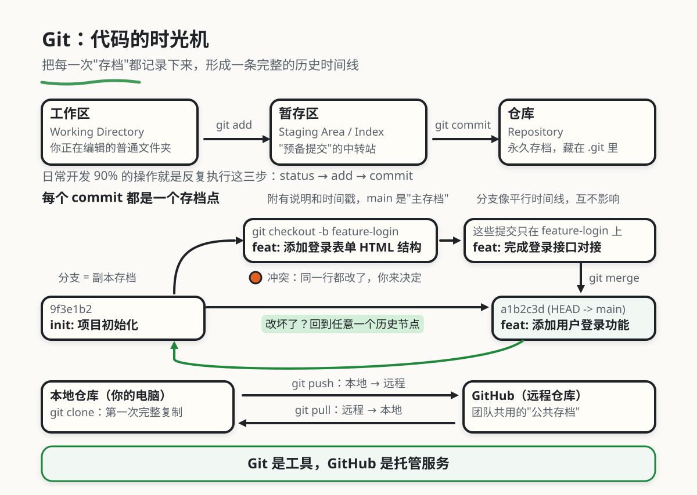

Git：代码的时光机
本章目录 · 1 节
Git 版本控制原理
学习指南：这一章专门写给完全没用过 Git 的人。我们不会上来就让你背命令，而是先搞清楚"Git 到底在帮你解决什么问题"，再一步步把命令和概念串起来。读完后，你应该能独立完成：本地提交、创建分支、推送到 GitHub。
0. 典型场景与痛点
场景一：版本地狱
你写论文或者写代码，改到一半发现改错了，想回到三天前的版本——但你找不到了。
项目_v1.zip
项目_v2_修改版.zip
项目_v3_最终版.zip
项目_v3_最终版_真的最终版.zip
项目_v3_最终版_打死不改了.zip
每次存一个新副本，硬盘越来越乱，而且你根本记不住哪个版本改了什么。
场景二：协作噩梦
你和队友同时改同一个文件：
- 你改了第 10 行，添加了登录功能
- 队友改了第 10 行，修复了一个 Bug
- 你们用邮件互发代码，结果合并时一个人的改动被另一个人覆盖了
- 没人知道最后哪段代码是对的
场景三：没有"后悔药"
你在生产环境部署了新代码，结果出 Bug 了，想紧急回退到上一个稳定版本——但你不知道怎么回退，只能手忙脚乱地找备份。
Git 就是为了解决这三个问题而生的。
Git 是一个版本控制系统（Version Control System）。它的本质是：把你每一次"存档"操作都记录下来，形成一条完整的历史时间线，让你可以随时回到任意一个历史节点。
不夸张地说，Git 是现代软件开发最重要的工具之一。几乎所有的公司、所有的开源项目都在用它。
1. Git 和 GitHub 是一回事吗
很多初学者会混淆这两个概念，先澄清一下：
| Git | GitHub | |
|---|---|---|
| 是什么 | 一个运行在你电脑上的版本控制工具 | 一个存放 Git 仓库的网站（云端） |
| 在哪里 | 你的本地电脑 | 互联网上 |
| 能独立使用吗 | ✅ 可以，只管理本地历史 | ❌ 需要配合 Git 使用 |
| 类比 | 你本地的日记本 | 存日记的云盘 |
简单说：Git 是工具，GitHub 是托管服务。 就像 Word 是工具，OneDrive 是云盘一样，两者配合使用，但并不是同一个东西。
除了 GitHub，类似的服务还有 GitLab、Gitee（国内）等。
2. 核心概念：三个区域
这是整个 Git 最重要的设计，理解了这三个区域，你就理解了 Git 的灵魂。
Git 把你的文件状态分成三层：
工作区（Working Directory） 就是你的普通文件夹，你现在看到的、正在编辑的所有文件都在这里。你随便改，Git 会感知到你改了什么，但不会做任何记录。
暂存区（Staging Area / Index） 这是一个**"预备提交"的中转站**。你可以把工作区里想要保存的文件"放进"暂存区，就像把快递放进快递盒——还没寄出去，但已经选好了要寄什么。
仓库（Repository）
这是永久存档的历史记录库，藏在 .git 文件夹里。每次你执行 git commit，暂存区里的内容就会被封存进仓库，形成一条不可篡改的历史记录。
👇 动手点点看：依次点击命令按钮，观察文件在三个区域之间的流转。
两步走"（add + commit）的动机
很多初学者会问：为什么不能直接一键保存，非要先 add 再 commit？
因为现实开发中，你经常不想把所有改动都一起提交。
举个例子：你今天改了 5 个文件：
login.js：完成了登录功能（想提交）style.css：调整了登录页样式（想提交）debug.log：临时调试输出（不想提交）experiment.js：正在测试的新功能，还没完成（不想提交）todo.txt：你的个人备忘（不想提交）
如果没有暂存区，你要么把这 5 个文件全部提交（提交记录很混乱），要么一个都不提交。
有了暂存区，你可以精确控制：git add login.js style.css，只把这两个文件放进快递盒，然后 commit，这次提交就清清楚楚地记录"登录功能完成"。
3. 第一次使用 Git：初始化和基础工作流
3.1 安装和初始化
安装好 Git 后（macOS 自带，Windows 去 git-scm.com 下载），打开终端，进入你的项目文件夹：
# 在当前文件夹初始化一个 Git 仓库
git init
# Git 会创建一个隐藏的 .git 文件夹，所有历史记录存在里面
# 输出：Initialized empty Git repository in .../your-project/.git/
第一次使用还需要告诉 Git 你是谁（这个信息会附在每次提交记录上）：
git config --global user.name "你的名字"
git config --global user.email "你的邮箱"
3.2 日常工作流：三步存档
初始化之后，记录本地修改常用这三步：
第一步：查看状态
git status
这是你用得最多的命令，没有之一。它告诉你：
- 你在哪个分支上
- 哪些文件被修改了（红色 = 未暂存）
- 哪些文件在暂存区里（绿色 = 已暂存，等待提交）
第二步：把文件放进暂存区
# 添加单个文件
git add login.js
# 添加多个文件
git add login.js style.css
# 添加当前文件夹里所有修改过的文件（用 . 表示"全部"）
git add .
⚠️ 初学者常见误区：
git add .非常方便，但会把所有修改都加进去，包括你不想提交的临时文件。养成精确 add 的习惯，或者用.gitignore排除不想追踪的文件（后面会讲）。
第三步：提交，写上说明
git commit -m "feat: 添加用户登录功能"
-m 后面引号里的内容叫做 commit message（提交说明）。这是写给未来的自己和队友看的，要写得有意义。
3.3 Commit Message 編寫規範
# ❌ 没用的写法——看了不知道做了什么
git commit -m "update"
git commit -m "fix"
git commit -m "改了一些东西"
# ✅ 好的写法：类型 + 冒号 + 一句话描述
git commit -m "feat: 添加用户登录功能"
git commit -m "fix: 修复首页在 iOS Safari 上的白屏问题"
git commit -m "docs: 更新 README 中的部署说明"
git commit -m "refactor: 将 UserService 拆分为独立模块"
git commit -m "style: 统一代码缩进为 2 空格"
常用前缀含义：
| 前缀 | 含义 |
|---|---|
feat: |
新功能（feature） |
fix: |
修复 Bug |
docs: |
文档改动 |
style: |
代码格式调整（不影响功能） |
refactor: |
代码重构（功能不变，结构优化） |
chore: |
构建、工具、依赖相关 |
test: |
测试相关 |
养成这个习惯，几个月后翻历史记录，一眼就知道每次提交做了什么。这在团队协作中尤其重要。
3.4 查看历史记录
# 详细格式（每次提交的完整信息）
git log
# 简洁格式（每行一条，推荐日常使用）
git log --oneline
# 示例输出：
# a1b2c3d (HEAD -> main) feat: 添加用户登录功能
# 9f3e1b2 init: 项目初始化
4. 分支概念：Branch
分支是 Git 最强大、也是最让初学者困惑的功能。但一旦理解了它，就会明白这个设计有多优雅。
4.1 分支概述：用"分支概念"来理解
想象你在玩一个角色扮演游戏，游戏里有一个关键选择：
- 选择 A：去挑战大 Boss（开发新功能）
- 选择 B：继续稳定当前局面（主线不动）
如果你直接在主存档上做选择 A，万一失败了，整个游戏进度就毁了。
但如果你复制一个存档，在副本里去挑战 Boss：
- 打赢了？把副本的成果合并回主存档
- 打输了？主存档完全没有影响，删掉副本重来
Git 分支就是这个"副本存档"机制。
在 Git 里，main（或 master）分支是你的"主存档"，永远保持稳定可用。当你要开发新功能时，你从 main 创建一个新分支，在那里开发、测试，完成后再合并回 main。
4.2 分支的可视化演示
👇 动手点点看：依次点击命令按钮，观察下方分支图如何分叉、延伸、最终合并。重点关注 HEAD 标签的位置变化——它始终指向"你当前在哪里"。
4.3 分支操作详解
创建并切换到新分支：
# 方式一：先创建，再切换（两步）
git branch feature-login # 创建分支
git checkout feature-login # 切换过去
# 方式二：一步到位（推荐）
git checkout -b feature-login
# 输出：Switched to a new branch 'feature-login'
创建分支后，你的命令行提示符会显示当前分支名，比如：
user@mac ~/project (feature-login) $
查看所有分支：
git branch
# 输出（* 表示当前所在分支）：
# * feature-login
# main
在分支上正常开发：
# 在 feature-login 分支上，改代码、add、commit，和平时完全一样
git add login.js
git commit -m "feat: 添加登录表单 HTML 结构"
git add login.js api.js
git commit -m "feat: 完成登录接口对接"
这些提交只在 feature-login 分支上，main 分支完全不知道你做了什么。
切回主分支，合并：
# 切回 main
git checkout main
# 把 feature-login 的所有改动合并进来
git merge feature-login
# 合并完成后，可以删掉这个分支（可选）
git branch -d feature-login
4.4 什么时候该开分支
| 场景 | 建议 | 理由 |
|---|---|---|
| 开发一个新功能 | ✅ 开分支 | 功能完成前不影响主线，随时可以放弃 |
| 修复线上紧急 Bug | ✅ 从 main 开 hotfix-xxx 分支 |
修复完直接合并上线，不带入未完成的功能 |
| 和队友并行开发 | ✅ 各自开分支 | 互不干扰，完成后统一通过 Pull Request 合并 |
| 只改一个错别字 | ❌ 直接在 main 改 | 风险极低，没必要额外开分支 |
4.5 团队常用的分支策略
在实际项目中，团队通常会约定好分支的命名和用途：
| 分支名 | 用途 | 特点 |
|---|---|---|
main / master |
生产环境的稳定代码 | 只有测试通过的代码才能进来，不能直接推送 |
dev / develop |
日常集成分支 | 所有功能分支先合并到这里，测试通过再上 main |
feature/xxx |
具体功能开发 | 如 feature/user-login，完成后合并到 dev |
hotfix/xxx |
紧急修复 | 从 main 创建，修完直接合并回 main 和 dev |
5. 与队友协作：远程仓库
到目前为止，你学的都是本地的 Git 操作——所有历史记录都存在你自己的电脑上。要和队友共享代码，你需要一个远程仓库，也就是 GitHub、GitLab 这样的云端存储。
5.1 远程仓库的工作原理
可以把远程仓库理解为团队共用的"公共存档"：
- 每个人在本地写代码、commit
- 写完后
push（上传）到远程仓库 - 队友
pull（下载）远程仓库的最新内容到自己本地 - 这样大家的代码就保持同步了
👇 动手点点看：依次点击命令，体验从关联远程仓库、推送、到拉取队友更新的完整流程。
5.2 第一次推送项目到 GitHub
第一步：在 GitHub 上创建一个新仓库（点击右上角 + → New repository），不要勾选初始化选项。
第二步：回到本地终端，关联远程仓库：
# 把本地仓库和 GitHub 上的仓库关联起来
# "origin" 是远程仓库的别名，是约定俗成的名字（也可以改，但没必要）
git remote add origin https://github.com/你的用户名/仓库名.git
# 确认关联成功
git remote -v
# 输出：
# origin https://github.com/你的用户名/仓库名.git (fetch)
# origin https://github.com/你的用户名/仓库名.git (push)
第三步：推送本地内容到远程：
# 第一次推送，-u 的意思是"以后 git push 时，默认推到 origin 的 main 分支"
git push -u origin main
# 之后每次推送只需要：
git push
5.3 日常协作的命令
推送（你改了东西，要让队友看到）：
git push
拉取（队友改了东西，你要同步）：
git pull
git pull 实际上是两个命令的组合：
git fetch：先去远程仓库下载最新的提交记录git merge：把下载回来的内容合并到你当前的分支
第一次从 GitHub 获取别人的项目：
# 把整个远程仓库复制到本地（只需要做一次）
git clone https://github.com/某人/某项目.git
# clone 会自动建立与远程的关联，之后直接 push/pull 就行
5.4 push 和 pull 的方向
你的电脑（本地仓库） ←→ GitHub（远程仓库）
git push： 本地 → 远程 （你改了东西，上传给队友）
git pull： 远程 → 本地 （队友改了东西，下载到你这里）
git clone： 远程 → 本地 （第一次完整复制整个仓库）
最佳实践：每天开始工作前先
git pull，拿到最新代码；下班或完成一个功能后git push，及时备份并让队友看到你的进展。
6. 进阶：处理冲突
冲突是协作中不可避免的，但也没那么可怕。
6.1 衝突發生機制
当你和队友同时修改了同一个文件的同一行，在合并时 Git 不知道该用谁的版本，就会产生冲突。
举个例子：
- 你在
login.js第 5 行写了：const timeout = 3000 - 队友同时在同一行写了：
const timeout = 5000 - 当你
git pull或git merge时，Git 发现了这个矛盾，就会"暂停"并告诉你：我不知道该用哪个，你来决定。
6.2 冲突文件长什么样
Git 会在冲突的地方插入特殊标记：
function login() {
const url = '/api/login'
<<<<<<< HEAD
const timeout = 3000 // 你的版本
=======
const timeout = 5000 // 队友的版本
>>>>>>> feature/update-timeout
return fetch(url, { timeout })
}
<<<<<<< HEAD到=======之间：是你当前分支的内容=======到>>>>>>> xxx之间：是合并过来的内容
6.3 解决冲突的方法
第一步：打开冲突文件，找到所有 <<<<<<< 标记（通常 VS Code 等编辑器会自动高亮）
第二步：决定保留哪段代码，然后手动编辑文件，删掉所有标记符号（<<<<<<<、=======、>>>>>>>）。
比如决定用 5000（队友的版本）：
function login() {
const url = '/api/login'
const timeout = 5000 // 采用队友的修改
return fetch(url, { timeout })
}
第三步：重新提交
# 标记冲突已解决
git add login.js
# 完成合并提交（Git 会自动生成合并提交信息）
git commit
6.4 减少冲突的好习惯
- 勤 pull：开始工作前同步最新代码，减少"你落后太多"的情况
- 小步提交：不要写了一周代码才一次性提交，频繁小提交更容易发现和解决冲突
- 分支隔离：不同功能用不同分支，减少对同一行代码的竞争
- 沟通：要改公共文件（比如
config.js）前，跟队友打个招呼
7. 常用命令速查
8. 实战：加入一个团队项目的完整流程
这是你加入新团队或新项目时的标准操作流程，可以直接照抄：
# ① 第一天：把项目 clone 到本地（只做一次）
git clone https://github.com/team/project.git
cd project
# ② 每天开始工作：先拉取最新代码，确保你的代码是最新的
git pull origin main
# ③ 创建自己的功能分支（不要直接在 main 上改）
git checkout -b feature/user-profile
# ④ 正常开发...写代码...
# ⑤ 完成一个小功能点后，立即提交（不要攒着）
git add src/UserProfile.vue
git commit -m "feat: 完成用户头像上传功能"
git add src/UserProfile.vue src/api/user.js
git commit -m "feat: 完成用户资料编辑接口"
# ⑥ 把自己的分支推送到远程，让队友能看到
git push origin feature/user-profile
# ⑦ 在 GitHub 上创建 Pull Request（PR），请求合并到 main
# （这步在 GitHub 网页上操作）
# ⑧ 等队友 Code Review，按反馈修改，继续 commit + push
# ⑨ PR 合并后，回到 main，更新本地，删掉功能分支
git checkout main
git pull
git branch -d feature/user-profile
9. .gitignore：哪些文件不应该被追踪
有些文件你不想提交到 Git 仓库里，比如：
node_modules/：依赖包，体积巨大，可以用npm install重新生成.env：环境变量文件，里面可能有数据库密码、API Key，绝对不能上传到公开仓库*.log：日志文件.DS_Store：macOS 自动生成的隐藏文件dist/、build/：编译产物，可以重新构建
在项目根目录创建一个 .gitignore 文件，写上不想追踪的文件规则：
# 依赖包
node_modules/
# 环境变量（重要！密码不能提交）
.env
.env.local
# 构建产物
dist/
build/
# 系统文件
.DS_Store
Thumbs.db
# 日志
*.log
GitHub 上有各种语言和框架的 .gitignore 模板：github.com/github/gitignore
名词速查表
| 名词 | 英文 | 解释 |
|---|---|---|
| 仓库 | Repository (Repo) | 存放项目所有版本历史的数据库，在 .git 文件夹里 |
| 提交 | Commit | 一次完整的版本记录，像游戏存档点，附有说明和时间戳 |
| 分支 | Branch | 独立的开发线，像平行时间线，互不影响 |
| 合并 | Merge | 把一个分支的改动整合到另一个分支 |
| 冲突 | Conflict | 同一行代码被多人修改，Git 不知道该用哪个，需要手动解决 |
| 暂存 | Stage / Index | 把修改放入"准备提交"列表的操作 |
| 远程 | Remote | 云端的仓库副本（GitHub / GitLab / Gitee） |
| 克隆 | Clone | 把整个远程仓库完整复制到本地 |
| 推送 | Push | 把本地提交上传到远程仓库 |
| 拉取 | Pull | 把远程最新内容下载并合并到本地 |
| HEAD | HEAD | 当前所在分支/提交的指针，表示"你现在在哪里" |
| origin | origin | 远程仓库的默认别名（约定俗成的名字） |
| stash | Stash | 临时保存还没 commit 的改动，切换任务时用 |
| PR / MR | Pull Request / Merge Request | 请求把你的分支合并进主分支，通常需要队友 review |
